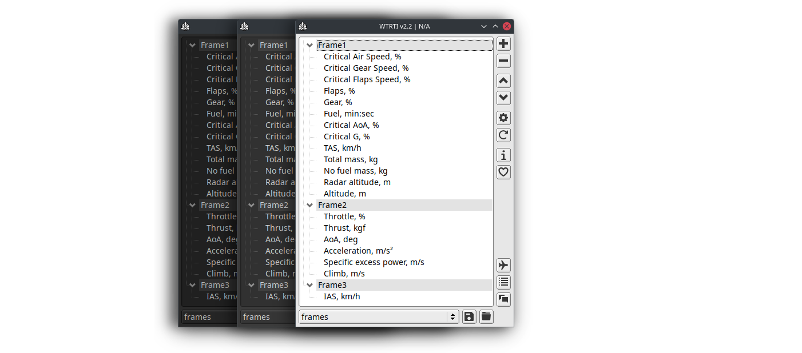

Welcome to WTRTI
A highly customizable HUD overlay and logging tool for War Thunder.


Features
- Cross-platform: Windows, Linux and macOS.
- More than 30 types of indicators (Climb, AoA, Turning time, Turning radius, Fuel consumption, WEP remain, Booster remain, etc.).
Note: Weapon or Ammo information is not available (or very limited) in the web-map, so it cannot be added to the app.
- Two types of OSD (On-screen display):
- WTRTI - Built-in OSD. See OSD Setup.
- RTSS - using "RivaTuner Statistics Server" OSD functionality.
- VR support (SteamVR only).
- Custom indicators, allows you to make a new indicators with a specific reading properties from localhost:8111.
- Graphical indicators. PRO version.
- Lua scripts, for custom processing of indicator values.
- Plot window that provides real-time visualization of telemetry data on a graph.
- Logging the flight data to CSV file.
- Custom "Alert" conditions for indicators, with a sound playback.
- Vehicle Information window, provides additional information (Speed Limits, Critical Overload, Critical AoA, etc).
- Per-vehicle profile, with automatic loading at the beginning of a battle.
- Hotkey actions (e.g. Profile loading).
- Game chat window, with ability translate in-game chat messages by opening Google Translate web-page or 'in-app' translate (Lingva.ml).
- Battle log window, with a keyword highlight of the battle events.
- Experimental DCS World support, see DCS World Setup.
How it works
This is not a mod.
WTRTI does not make any changes to the game process or its data, it 'only' takes data from localhost:8111(web-map) and displays it on a screen (Overlay).
Installation
- Download the latest version.
- Extract it to a separate folder with write permissions.
Since the program works in portable mode, all files (logs, profiles, etc.) that the program dumps or uses, will be located in the same folder as the executable file.Note: Make sure it is not in the game root directory, otherwise the game launcher will delete the WTRTI executable.
- Start WTRTI.
- Add some indicators to the list (+ button).
- Start the game and switch to the "Fullscreen Window" mode in the Graphics settings.
- Go to "Test Flight".
Upgrade from previous versions
Simply extract the downloaded zip file into the folder where the old version is located.
System requirements
- Game: Full client+
Note: DEV Server or Minimal client users, see Troubleshooting for a workaround.
- OS:
Windows: 7 or higher.
Linux: Ubuntu 20.04 and later. X11 only.
The Overlay requires Compositor (eg. kwin, compiz).
Since v2.2.5, you can use Gamescope (v3.11.0+), See How-To.
macOS: 11.0 and later. - Graphics:
Buit-in OSD: Any OpenGL 3.3 compatible GPU.
RTSS OSD: Rivatuner Statistics Server v7.3+. Download - VR: SteamVR. See VR for more info.